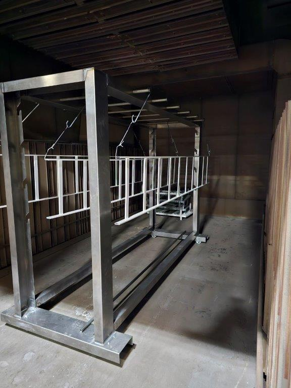
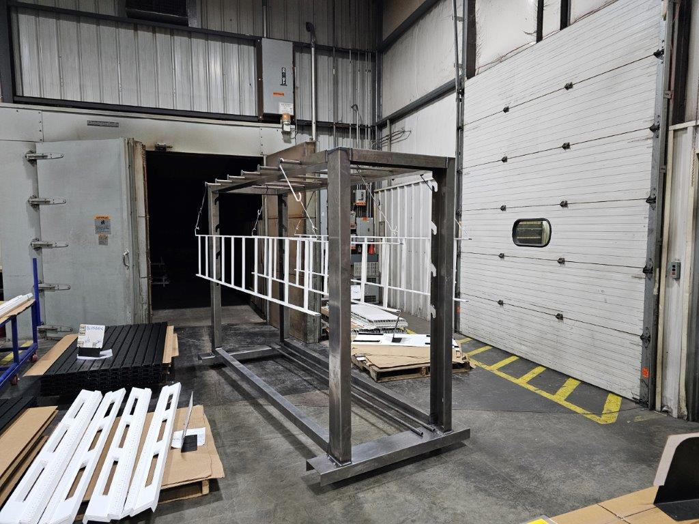
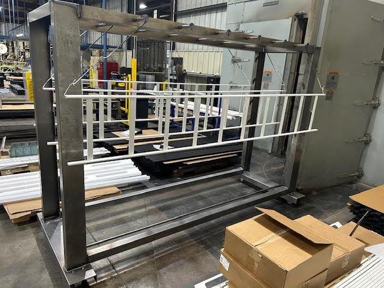
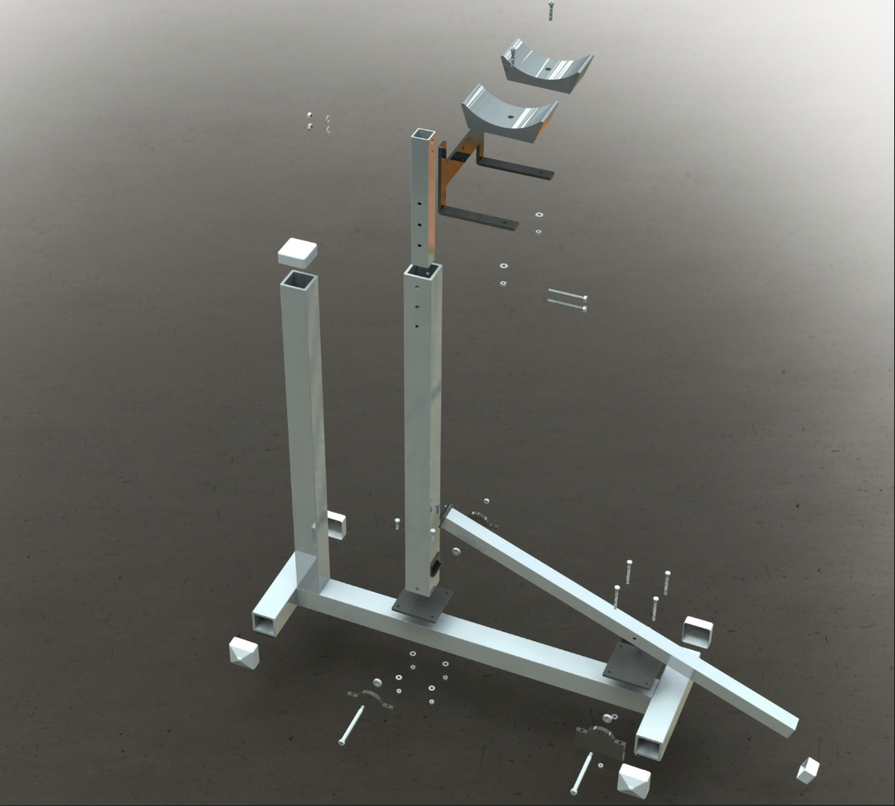
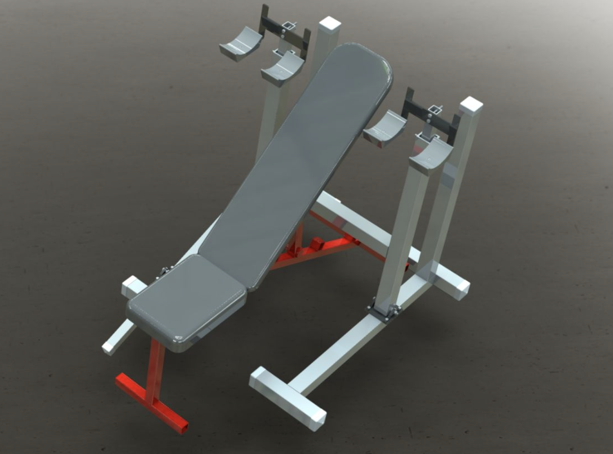
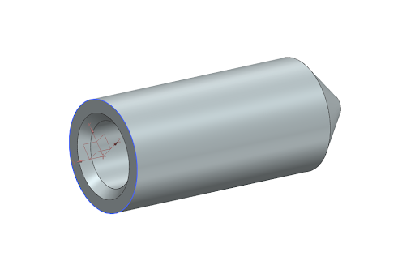
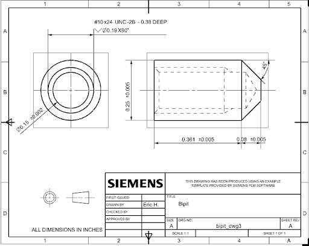

Primary Purpose: Designed, built, and implemented a custom rack for use in a powder coat line.
Design Details:
Worked through full design phase from concept sketches to full CAD assembly, using Inventor for the 3D model and converting files into AutoCAD for machining and laser cutting drawings.
Machined most parts in-house using CRS and ordered others from external vendors
Performed and reported on FEA/Stress analysis confirming a maximum load of 250+lbs per short bar, 50+lbs per long bar, and an overall maximum load of 800lbs with a 1.5 factor of safety, with the limiting factor being the wheels rather than the actual machined assembly
Rack assembled, tested and implemented in manual powder coat line, as shown below



Dumbbell Bench Accessory
Primary Purpose: Allow for user to set up dumbbell bench press by raising dumbbells one by one onto platforms, allowing for easier and safer setup.
Design Details:
Used SolidWorks
Primarily steel
8 custom-designed parts, 10 OEM parts
Hollowed arms
Felt pads interacting with ground
Foot pedal/lever allowing for arms to fall back after setup
Result: Went through three rounds of presentation (concept, design, consumer product) to a class of fellow engineers.


Bipple (Motorsports)
Primary Purpose: Screw onto the end of a screw to allow for hole alignment. Should be flush with the cylindrical face of the screw.
Design Details:
Used NX CAD
Steel
0.25'' diameter (machined at 0.249'')
Machined down from barstock using saw and lathe
0.1' chamfer at end
Result: Machined by hand using lathe and tested by attaching to a screw, passed test.


Whegs (Wheel-Legs)
Primary Purpose: Design wheels modeled off legs to complete an obstacle course including walls, ramps, balance paths, rings, etc.
Design Details:
Used SolidWorks
3D-Printed, attached to robotic car
Challenge put constraints on thickness, diameter
Result: Though the car was not very aesthetically pleasing it showed a very strong performance in the obstacle course, passing most challenges.